Справочник по Angular и React · модуль 2 · данные с сервера и ИИ-диспетчер
2.4
Собственный хук
В этой главе код работы с заявками переезжает из App.tsx в отдельную функцию — собственный хук useRequests. Сначала в хук переходят загрузка, ошибка и кнопка «Повторить», затем добавление, смена статуса и удаление. Доска при этом работает как прежде, а App.tsx становится короче на 35 строк. Два опыта показывают, как хук ведёт себя в нескольких компонентах и почему хуки нельзя вызывать после return по условию. В конце разобраны правила хуков и проверка, которую выполняет линтер.
- Категория
- React, хуки
- Уровень
- Начальный
- Что понадобится
- Проект
zayavkiпосле главы 2.3 и запущенный PocketBase с коллекциейrequests - Результат
- Файл
useRequests.tsс хуком,App.tsxполучает заявки и действия одной строкой
§1Зачем собственный хук
РазбираемсяЧто лежит в App.tsx
После главы 2.3 в App.tsx 150 строк, и в них смешаны две задачи. Первая — данные: список заявок, состояние загрузки и ошибки, эффект загрузки, запросы к серверу на добавление, смену статуса и удаление. Вторая — экран: фильтр, сообщение над списком, клавиша Esc, заголовок вкладки, разметка. Чтобы изменить загрузку, приходится искать её среди кода экрана.
В кафе официант принимает заказ и передаёт его на кухню. Котлеты официант не жарит: он забирает готовое блюдо из окошка выдачи. Кухня может готовить и для зала, и для доставки, а официанту достаточно знать, что можно заказать.
Кухня в кафе одна на всех официантов. У хука такой общей кухни нет: каждый компонент, который его вызывает, получает собственные переменные состояния.
Собственный хук (custom hook) — функция, имя которой начинается с use и внутри которой вызываются другие хуки: useState, useEffect. Хук возвращает компоненту то, что ему нужно, а как это получено, остаётся внутри хука. Для доски это будет useRequests: в нём состояние заявок, загрузка и запросы к серверу, а компонент получает готовый список и функции для действий.
На схеме — App.tsx до главы и после неё.
Код работы с заявками до и после переноса в хук
Голубое — код экрана, зелёное — код данных. Код данных переезжает в отдельный файл без изменений. В App.tsx от него остаётся одна строка с вызовом хука.
Хуки из React — useState, useEffect — встроенные. Собственный хук собирается из них, как функция собирается из других функций. Переносить будем в два шага, после каждого проверяя доску.
Первый шаг — загрузка: четыре переменные состояния, эффект и функция retry.
§2Хук загрузки
ДелаемПереносим загрузку в useRequests
- Создайте файл хука
В папке
zayavki/srcсоздайте файлuseRequests.tsи вставьте код. Состояния, эффект иretryскопированы изApp.tsxбез изменений.zayavki/src/useRequests.ts import { useEffect, useState } from 'react' import { fetchRequests } from './api' import type { RequestItem } from './requests' export function useRequests() { const [requests, setRequests] = useState<RequestItem[]>([]) const [loading, setLoading] = useState(true) const [error, setError] = useState('') const [attempt, setAttempt] = useState(0) useEffect(() => { let ignore = false async function load() { try { const list = await fetchRequests() if (!ignore) { setRequests(list) } } catch (e) { if (!ignore) { setError((e as Error).message) } } if (!ignore) { setLoading(false) } } load() return () => { ignore = true } }, [attempt]) function retry() { setError('') setLoading(true) setAttempt(attempt + 1) } return { requests, setRequests, loading, error, retry } }
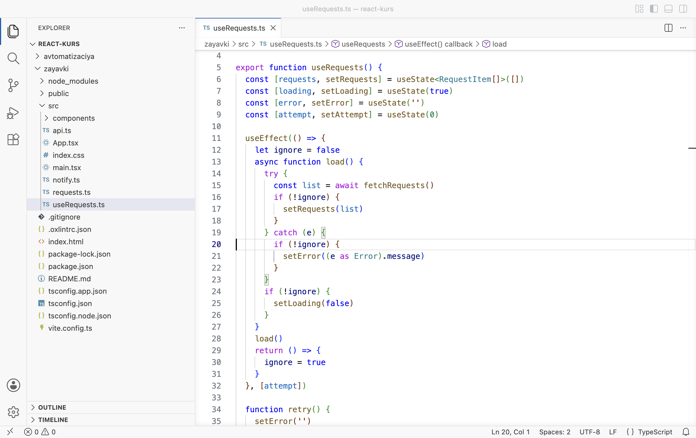
Новый файл src/useRequests.ts - Замените App.tsx
Замените содержимое
src/App.tsx. ЧетыреuseState, эффект загрузки иretryиз него удалены. Вместо них — строка 15 с вызовом хука. Изменённые строки подсвечены.zayavki/src/App.tsx import { useEffect, useState } from 'react' import Header from './components/Header' import RequestForm from './components/RequestForm' import RequestCard from './components/RequestCard' import { nextStatus, type NewRequest, type Status } from './requests' import { createRequest, deleteRequest, updateStatus } from './api' import { useRequests } from './useRequests' import { sendRequest } from './notify' type Filter = 'Все' | Status const FILTERS: Filter[] = ['Все', 'Новая', 'В работе', 'Готово'] function App() { const { requests, setRequests, loading, error, retry } = useRequests() const [filter, setFilter] = useState<Filter>('Все') const [notice, setNotice] = useState('') const newCount = requests.filter((r) => r.status === 'Новая').length const visible = filter === 'Все' ? requests : requests.filter((r) => r.status === filter) useEffect(() => { document.title = `Новых: ${newCount} · Доска заявок` }, [newCount]) useEffect(() => { if (notice === '') { return } const timer = setTimeout(() => setNotice(''), 5000) return () => clearTimeout(timer) }, [notice]) useEffect(() => { function handleKey(event: KeyboardEvent) { if (event.key === 'Escape') { setFilter('Все') } } window.addEventListener('keydown', handleKey) return () => window.removeEventListener('keydown', handleKey) }, []) async function handleNext(id: string, status: Status) { try { const updated = await updateStatus(id, nextStatus(status)) setRequests((list) => list.map((r) => (r.id === id ? updated : r))) } catch (e) { setNotice((e as Error).message) } } async function handleAdd(data: NewRequest) { try { const created = await createRequest(data) setRequests((list) => [created, ...list]) setNotice('Заявка добавлена. Отправляем уведомление…') const sent = await sendRequest(created) if (sent) { setNotice('Заявка добавлена, уведомление отправлено.') } else { setNotice('Заявка добавлена, но уведомление не отправлено: сервер автоматизации недоступен.') } } catch (e) { setNotice((e as Error).message) } } async function handleRemove(id: string) { try { await deleteRequest(id) setRequests((list) => list.filter((r) => r.id !== id)) } catch (e) { setNotice((e as Error).message) } } return ( <> <Header newCount={newCount} /> <main className="board"> <RequestForm onAdd={handleAdd} /> <section className="list"> <h2>Заявки</h2> {notice !== '' && <p className="notice">{notice}</p>} <div className="filters"> {FILTERS.map((f) => ( <button key={f} className={f === filter ? 'active' : ''} onClick={() => setFilter(f)}> {f} </button> ))} </div> {loading && <p className="empty">Загрузка заявок…</p>} {error !== '' && ( <div className="load-error"> <p>{error}</p> <button onClick={retry}>Повторить</button> </div> )} {!loading && error === '' && visible.length === 0 && <p className="empty">Заявок с таким статусом нет</p>} {visible.map((r) => ( <RequestCard key={r.id} title={r.title} room={r.room} category={r.category} details={r.details} status={r.status} onNext={() => handleNext(r.id, r.status)} onRemove={() => handleRemove(r.id)} /> ))} </section> </main> </> ) } export default App
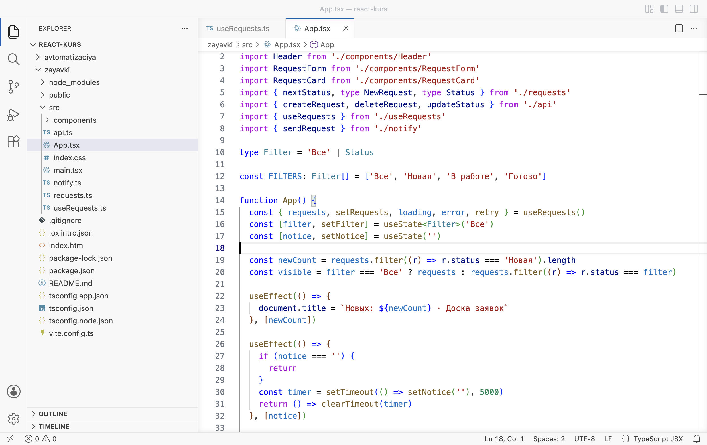
App.tsx: заявки и загрузка приходят из хука, строка 15 - Проверьте доску
Обновите страницу (F5). Доска показывает те же шесть заявок, что в конце главы 2.3: «Не печатает принтер» в работе, остальные новые.

Доска работает как раньше
РазбираемсяЧто записано в хуке
import { useEffect, useState } from 'react' 1 import { fetchRequests } from './api' import type { RequestItem } from './requests' export function useRequests() { 2 const [requests, setRequests] = useState<RequestItem[]>([]) 3 const [loading, setLoading] = useState(true) const [error, setError] = useState('') const [attempt, setAttempt] = useState(0) useEffect(() => { 4 let ignore = false async function load() { try { const list = await fetchRequests() if (!ignore) { setRequests(list) } } catch (e) { if (!ignore) { setError((e as Error).message) } } if (!ignore) { setLoading(false) } } load() return () => { ignore = true } }, [attempt]) function retry() { 5 setError('') setLoading(true) setAttempt(attempt + 1) } return { requests, setRequests, loading, error, retry } 6 }
- 1
Хук сам вызывает
useStateиuseEffect, поэтому импортирует их из React — как компонент. - 2
Обычная функция с именем на
use. Словоexportразрешает импортировать её в других файлах. Разметку хук не возвращает, поэтому у файла расширение.ts. - 3
Четыре переменные состояния — те же, что были в
App: список, загрузка, текст ошибки, номер попытки. - 4
Эффект загрузки из главы 2.3, слово в слово.
- 5
Функция для кнопки «Повторить».
- 6
Хук возвращает объект из пяти значений. Запись
{ requests, setRequests, … }— короткая форма{ requests: requests, … }. Имя поля совпадает с именем переменной.attemptи сеттеры загрузки наружу не выходят: они нужны только внутри хука.
В App объект сразу раскладывается на переменные:
const { requests, setRequests, loading, error, retry } = useRequests()
Это распаковка объекта, знакомая по props из главы 1.3: из объекта, который вернул хук, берутся поля с этими именами. Остальной код App пользуется ими как раньше: requests в фильтре и карточках, setRequests в обработчиках, loading, error и retry в разметке.
Для React вызов хука равен его строкам, вставленным в компонент на место вызова. Состояния useRequests принадлежат App. При каждой отрисовке App хук вызывается снова и отдаёт текущие значения, как useState.
Что выполняется при отрисовке App
Пунктирная рамка — граница файла useRequests.ts. Для React её нет: все десять хуков относятся к одному компоненту App и вызываются при каждой его отрисовке в этом порядке.
Загрузка переехала. Но App всё ещё сам отправляет запросы на изменение и сам меняет список через setRequests. Это тоже работа с данными, и ей место в хуке.
§3Действия в хуке
ДелаемДобавление, статус и удаление переезжают в хук
- Дополните хук
Замените содержимое
src/useRequests.ts. Добавлены три функции действий, изменился список импортов и объект, который хук возвращает.zayavki/src/useRequests.ts import { useEffect, useState } from 'react' import { createRequest, deleteRequest, fetchRequests, updateStatus } from './api' import { nextStatus, type NewRequest, type RequestItem, type Status } from './requests' export function useRequests() { const [requests, setRequests] = useState<RequestItem[]>([]) const [loading, setLoading] = useState(true) const [error, setError] = useState('') const [attempt, setAttempt] = useState(0) useEffect(() => { let ignore = false async function load() { try { const list = await fetchRequests() if (!ignore) { setRequests(list) } } catch (e) { if (!ignore) { setError((e as Error).message) } } if (!ignore) { setLoading(false) } } load() return () => { ignore = true } }, [attempt]) function retry() { setError('') setLoading(true) setAttempt(attempt + 1) } async function add(data: NewRequest): Promise<RequestItem> { const created = await createRequest(data) setRequests((list) => [created, ...list]) return created } async function next(id: string, status: Status) { const updated = await updateStatus(id, nextStatus(status)) setRequests((list) => list.map((r) => (r.id === id ? updated : r))) } async function remove(id: string) { await deleteRequest(id) setRequests((list) => list.filter((r) => r.id !== id)) } return { requests, loading, error, retry, add, next, remove } }
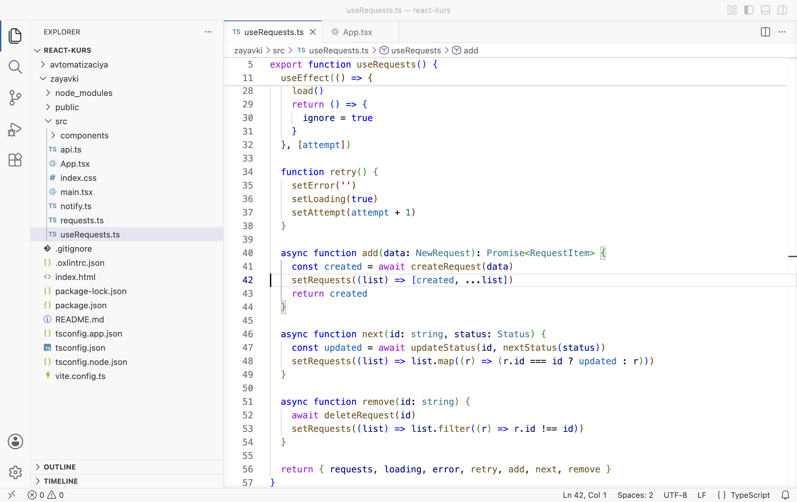
Хук с действиями add, next, remove - Замените App.tsx
Обработчики теперь вызывают функции хука. Импорт из
api.tsбольше не нужен: с сервером работает только хук.zayavki/src/App.tsx import { useEffect, useState } from 'react' import Header from './components/Header' import RequestForm from './components/RequestForm' import RequestCard from './components/RequestCard' import type { NewRequest, Status } from './requests' import { useRequests } from './useRequests' import { sendRequest } from './notify' type Filter = 'Все' | Status const FILTERS: Filter[] = ['Все', 'Новая', 'В работе', 'Готово'] function App() { const { requests, loading, error, retry, add, next, remove } = useRequests() const [filter, setFilter] = useState<Filter>('Все') const [notice, setNotice] = useState('') const newCount = requests.filter((r) => r.status === 'Новая').length const visible = filter === 'Все' ? requests : requests.filter((r) => r.status === filter) useEffect(() => { document.title = `Новых: ${newCount} · Доска заявок` }, [newCount]) useEffect(() => { if (notice === '') { return } const timer = setTimeout(() => setNotice(''), 5000) return () => clearTimeout(timer) }, [notice]) useEffect(() => { function handleKey(event: KeyboardEvent) { if (event.key === 'Escape') { setFilter('Все') } } window.addEventListener('keydown', handleKey) return () => window.removeEventListener('keydown', handleKey) }, []) async function handleNext(id: string, status: Status) { try { await next(id, status) } catch (e) { setNotice((e as Error).message) } } async function handleAdd(data: NewRequest) { try { const created = await add(data) setNotice('Заявка добавлена. Отправляем уведомление…') const sent = await sendRequest(created) if (sent) { setNotice('Заявка добавлена, уведомление отправлено.') } else { setNotice('Заявка добавлена, но уведомление не отправлено: сервер автоматизации недоступен.') } } catch (e) { setNotice((e as Error).message) } } async function handleRemove(id: string) { try { await remove(id) } catch (e) { setNotice((e as Error).message) } } return ( <> <Header newCount={newCount} /> <main className="board"> <RequestForm onAdd={handleAdd} /> <section className="list"> <h2>Заявки</h2> {notice !== '' && <p className="notice">{notice}</p>} <div className="filters"> {FILTERS.map((f) => ( <button key={f} className={f === filter ? 'active' : ''} onClick={() => setFilter(f)}> {f} </button> ))} </div> {loading && <p className="empty">Загрузка заявок…</p>} {error !== '' && ( <div className="load-error"> <p>{error}</p> <button onClick={retry}>Повторить</button> </div> )} {!loading && error === '' && visible.length === 0 && <p className="empty">Заявок с таким статусом нет</p>} {visible.map((r) => ( <RequestCard key={r.id} title={r.title} room={r.room} category={r.category} details={r.details} status={r.status} onNext={() => handleNext(r.id, r.status)} onRemove={() => handleRemove(r.id)} /> ))} </section> </main> </> ) } export default App
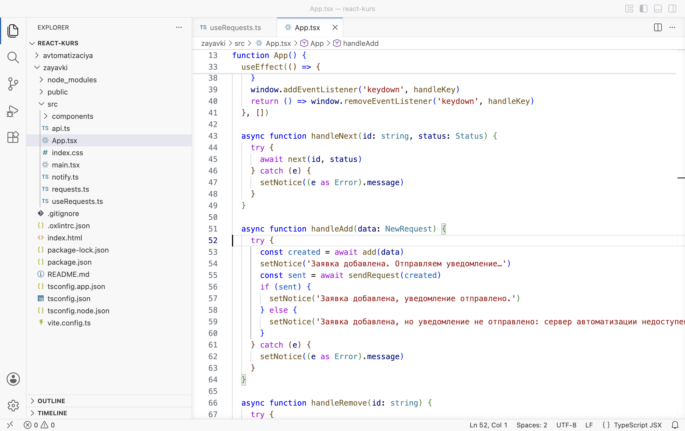
Обработчики App вызывают next, add и remove - Проверьте добавление
Обновите страницу (F5). Добавьте заявку «Нет звука в колонках», кабинет 305, категория «Компьютер». Она появилась сверху, над списком сообщение об отправке уведомления.
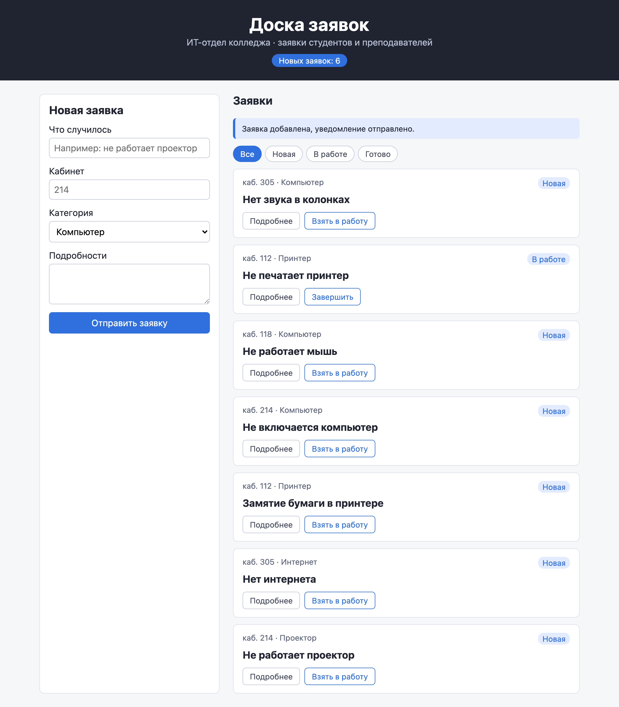
Новая заявка сохранена через хук
РазбираемсяКто за что отвечает
async function add(data: NewRequest): Promise<RequestItem> { 1 const created = await createRequest(data) setRequests((list) => [created, ...list]) return created 2 } async function next(id: string, status: Status) { 3 const updated = await updateStatus(id, nextStatus(status)) setRequests((list) => list.map((r) => (r.id === id ? updated : r))) } async function remove(id: string) { 4 await deleteRequest(id) setRequests((list) => list.filter((r) => r.id !== id)) } return { requests, loading, error, retry, add, next, remove } 5
- 1
addсоздаёт заявку на сервере и кладёт её в начало списка. Код взят изhandleAddглавы 2.3.Promise<RequestItem>— «когда-нибудь вернёт заявку»: так записывается результат асинхронной функции. - 2
Созданная заявка возвращается тому, кто вызвал
add.Appпередаёт её вsendRequestдля уведомления в Telegram. - 3
nextпереводит заявку в следующий статус и заменяет её в списке. - 4
removeудаляет заявку на сервере и из списка. - 5
Наружу выходят семь значений.
setRequestsсреди них нет: список меняется только черезadd,nextиremove, и каждое изменение сначала проходит через сервер.
В функциях хука нет try и catch. Если сервер не ответил, ошибка из callApi проходит через next и попадает в handleNext в App, где её ловит catch. Так разделены обязанности: хук работает с сервером и списком, а тексты для человека задаёт компонент. Текст «Заявка добавлена, уведомление отправлено» относится к экрану, поэтому он остался в App.
| Что | Где после главы |
|---|---|
| Список заявок, загрузка, ошибка загрузки, номер попытки | useRequests |
| Запросы к PocketBase и изменение списка | useRequests (через api.ts) |
| Фильтр, сообщение над списком, клавиша Esc, заголовок вкладки | App |
| Тексты сообщений и уведомление в Telegram | App |
Хук можно вызвать в любом компоненте. Следующий опыт — вызов в двух компонентах сразу.
§4У каждого вызова своё состояние
ДелаемОпыт: шапка сама загружает заявки
- Замените Header.tsx
Шапка сама вызовет
useRequestsи посчитает новые заявки, без propnewCount. Замените содержимоеsrc/components/Header.tsx.zayavki/src/components/Header.tsx import { useRequests } from '../useRequests' function Header() { const { requests } = useRequests() const newCount = requests.filter((r) => r.status === 'Новая').length return ( <header className="header"> <h1>Доска заявок</h1> <p>ИТ-отдел колледжа · заявки студентов и преподавателей</p> <span className="header__count">Новых заявок: {newCount}</span> </header> ) } export default Header
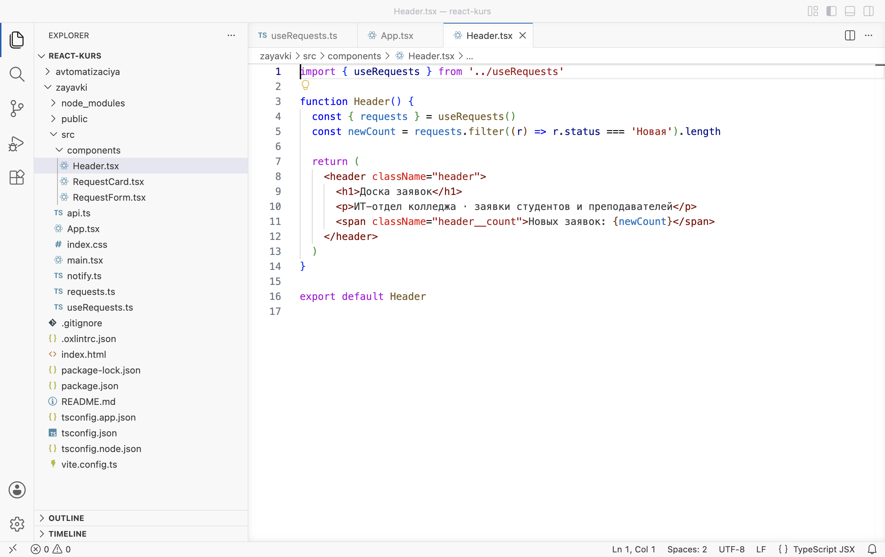
Шапка вызывает хук сама - Уберите prop в App.tsx
В
src/App.tsxнайдите строку 76<Header newCount={newCount} />и замените её на<Header />. Сохраните. - Посмотрите запросы
Откройте DevTools (F12), вкладку Network, фильтр Fetch/XHR. Обновите страницу. Запросов
records?sort=-createdстало четыре: по два отAppи отHeader.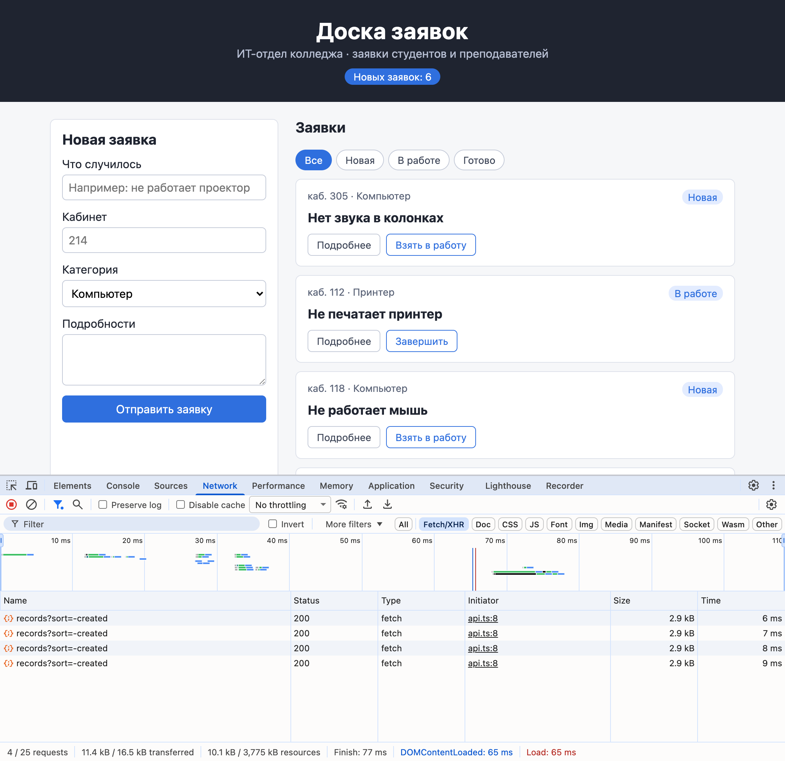
Четыре запроса списка вместо двух - Возьмите заявку в работу
Закройте DevTools. У верхней заявки «Нет звука в колонках» нажмите Взять в работу. Статус карточки сменился на «В работе», а в шапке по-прежнему «Новых заявок: 6».
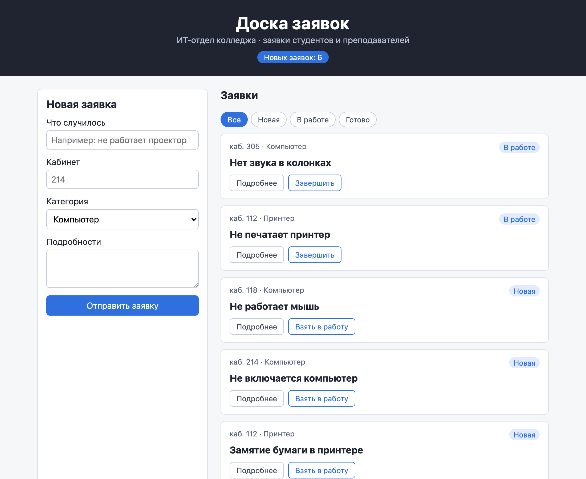
Карточка изменилась, счётчик в шапке — нет - Верните прежний код
Замените
Header.tsxкодом ниже. ВApp.tsxверните строку 76:<Header newCount={newCount} />.zayavki/src/components/Header.tsx type HeaderProps = { newCount: number } function Header({ newCount }: HeaderProps) { return ( <header className="header"> <h1>Доска заявок</h1> <p>ИТ-отдел колледжа · заявки студентов и преподавателей</p> <span className="header__count">Новых заявок: {newCount}</span> </header> ) } export default Header
РазбираемсяПочему счётчик не изменился
Каждый вызов хука создаёт свои переменные состояния. useRequests в App и useRequests в Header — два отдельных списка, и каждый загружен своим эффектом. Кнопка «Взять в работу» вызывает next из хука App, поэтому меняется только список App. В списке Header заявка осталась «Новой» до следующей загрузки страницы.
Два вызова хука — два списка
Пунктир — загрузка при открытии страницы: оба списка получили одни и те же данные. После этого они живут отдельно, и изменение одного не попадает в другой.
Из опыта следует правило: хук даёт компонентам общий код, данные у каждого вызова свои. Когда нескольким компонентам нужен один и тот же список, хук вызывают один раз в общем родителе, а данные передают через props. Так и было устроено до опыта: App вызывает useRequests и передаёт шапке готовое число newCount.
Хуки вызываются по правилам, и линтер проверяет их. Нарушение одного правила ломает страницу целиком — это следующий опыт.
§5Правила хуков
ДелаемОпыт: хук после return по условию
- Замените App.tsx
Пусть раздел «Готово» будет временно закрыт: если выбран этот фильтр,
Appсразу возвращает надпись. Проверка стоит перед вызовом хука. Изменённые строки подсвечены.zayavki/src/App.tsx · опыт import { useEffect, useState } from 'react' import Header from './components/Header' import RequestForm from './components/RequestForm' import RequestCard from './components/RequestCard' import type { NewRequest, Status } from './requests' import { useRequests } from './useRequests' import { sendRequest } from './notify' type Filter = 'Все' | Status const FILTERS: Filter[] = ['Все', 'Новая', 'В работе', 'Готово'] function App() { const [filter, setFilter] = useState<Filter>('Все') if (filter === 'Готово') { return <p className="empty">Раздел «Готово» пока закрыт</p> } const { requests, loading, error, retry, add, next, remove } = useRequests() const [notice, setNotice] = useState('') const newCount = requests.filter((r) => r.status === 'Новая').length const visible = filter === 'Все' ? requests : requests.filter((r) => r.status === filter) useEffect(() => { document.title = `Новых: ${newCount} · Доска заявок` }, [newCount]) useEffect(() => { if (notice === '') { return } const timer = setTimeout(() => setNotice(''), 5000) return () => clearTimeout(timer) }, [notice]) useEffect(() => { function handleKey(event: KeyboardEvent) { if (event.key === 'Escape') { setFilter('Все') } } window.addEventListener('keydown', handleKey) return () => window.removeEventListener('keydown', handleKey) }, []) async function handleNext(id: string, status: Status) { try { await next(id, status) } catch (e) { setNotice((e as Error).message) } } async function handleAdd(data: NewRequest) { try { const created = await add(data) setNotice('Заявка добавлена. Отправляем уведомление…') const sent = await sendRequest(created) if (sent) { setNotice('Заявка добавлена, уведомление отправлено.') } else { setNotice('Заявка добавлена, но уведомление не отправлено: сервер автоматизации недоступен.') } } catch (e) { setNotice((e as Error).message) } } async function handleRemove(id: string) { try { await remove(id) } catch (e) { setNotice((e as Error).message) } } return ( <> <Header newCount={newCount} /> <main className="board"> <RequestForm onAdd={handleAdd} /> <section className="list"> <h2>Заявки</h2> {notice !== '' && <p className="notice">{notice}</p>} <div className="filters"> {FILTERS.map((f) => ( <button key={f} className={f === filter ? 'active' : ''} onClick={() => setFilter(f)}> {f} </button> ))} </div> {loading && <p className="empty">Загрузка заявок…</p>} {error !== '' && ( <div className="load-error"> <p>{error}</p> <button onClick={retry}>Повторить</button> </div> )} {!loading && error === '' && visible.length === 0 && <p className="empty">Заявок с таким статусом нет</p>} {visible.map((r) => ( <RequestCard key={r.id} title={r.title} room={r.room} category={r.category} details={r.details} status={r.status} onNext={() => handleNext(r.id, r.status)} onRemove={() => handleRemove(r.id)} /> ))} </section> </main> </> ) } export default App
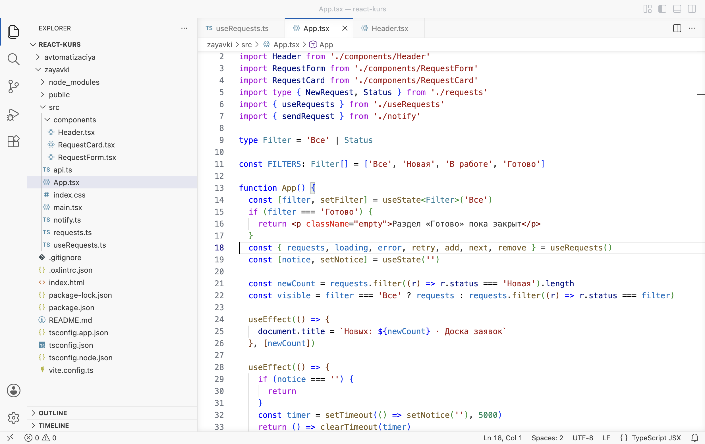
Вызов useRequests стоит после return по условию - Запустите линтер
Откройте второй терминал (Terminal → New Terminal) и выполните команду.
Терминал · папка react-kurs cd zayavki && npm run lint
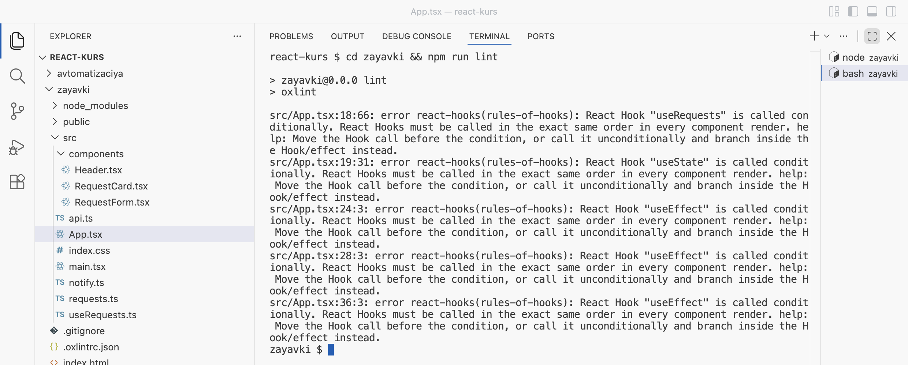
Пять ошибок rules-of-hooks: хуки вызываются по условию - Нажмите «Готово»
Откройте DevTools на вкладке Console и обновите страницу. Доска открылась. Нажмите фильтр Готово: страница стала пустой, в консоли ошибка.
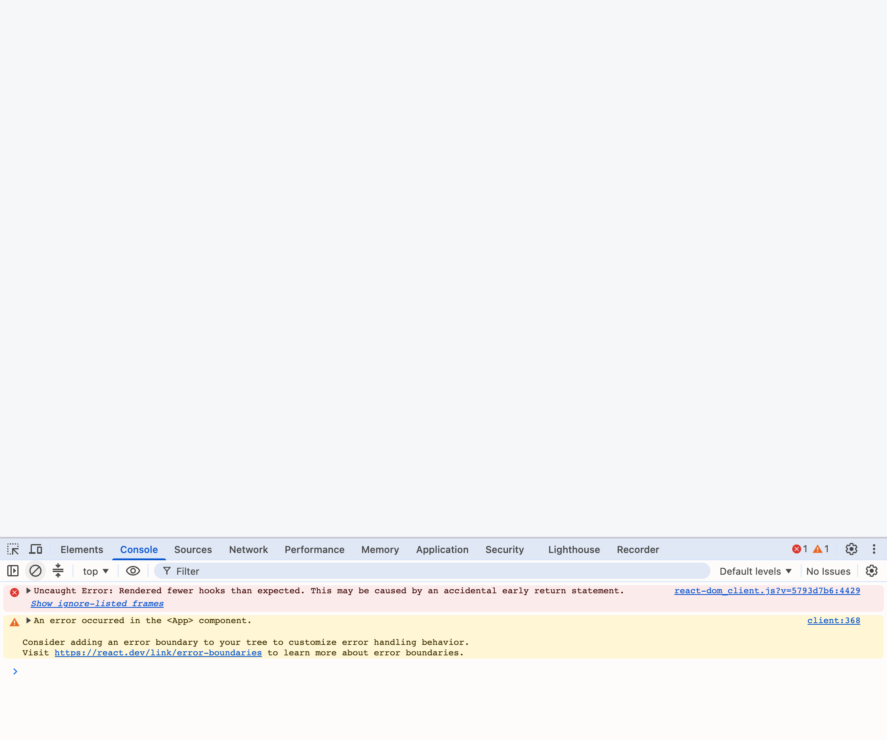
«Rendered fewer hooks than expected»: страница пропала - Верните App.tsx
Замените содержимое
src/App.tsxкодом из §3 и обновите страницу.
РазбираемсяПочему важен порядок вызовов
Имена переменных состояния React не сохраняет. Значения хуков он хранит компонента списком и раздаёт их по порядку вызова: первому useState — первое значение, второму — второе. Поэтому при каждой отрисовке хуки должны вызываться в одном и том же порядке и в одном и том же количестве. Пошаговый разбор показывает, что произошло в опыте.
function App() { const [filter, setFilter] = useState<Filter>('Все') if (filter === 'Готово') { return <p className="empty">Раздел «Готово» пока закрыт</p> } const { requests, loading, error, retry, add, next, remove } = useRequests() const [notice, setNotice] = useState('')
- Первая отрисовка, хук 1
Фильтр «Все».
useStateдляfilterполучает ячейку 1.ячейка 1filter = «Все» - Условие не выполнено
Фильтр не «Готово»,
returnпропущен. - Хуки 2–10
useRequestsзанимает ячейки 2–6: четыре состояния и эффект. Дальшеnotice— ячейка 7, три эффекта — ячейки 8–10. React запомнил: уAppдесять хуков.ячейка 1filterячейки 2–6useRequestsячейки 7–10notice, эффекты - Нажат «Готово»
Новая отрисовка. Ячейка 1 —
filter, теперь «Готово». Условие выполнено,Appвозвращает надпись.ячейка 1filter = «Готово» - Хуков меньше, чем было
Вызван один хук вместо десяти. Ячейки 2–10 остались без хозяев, и React останавливает отрисовку ошибкой «Rendered fewer hooks than expected» — «вызвано меньше хуков, чем ожидалось». Страница пустеет.
Отсюда правила хуков. Линтер oxlint из проекта проверяет их правилом react-hooks(rules-of-hooks):
- Хуки вызывают только на верхнем уровне компонента или собственного хука: не внутри
if, не в цикле, не послеreturnпо условию, не во вложенной функции. Тогда их порядок не меняется. - Хуки вызывают только из компонентов и собственных хуков, не из обычных функций вроде
api.ts. - Имя собственного хука начинается с
use. По имени линтер отличает хук от обычной функции. Если назвать функциюloadRequestsState, линтер сообщит, чтоuseStateвызван в функции, которая не компонент и не хук.
Условие переносят ниже всех хуков — в разметку. Так сделано с надписью «Заявок с таким статусом нет»: она выводится по условию в JSX, а хуки над ней вызываются всегда.
Доска загружает заявки один раз при открытии. Заявку, которую добавили в другом браузере, она покажет только после F5. Глава 2.5 обновляет список по событиям сервера.
§6Частые ошибки
Сообщения получены в проекте zayavki: линтера — командой npm run lint, ошибки типов — командой npx tsc -b, ошибка React — в консоли браузера.
| Что видно | Почему | Что сделать |
|---|---|---|
React Hook "useRequests" is called conditionally. React Hooks must be called in the exact same order in every component render. | Хук вызван внутри if или после return по условию | Перенести вызов хука выше условия, условие — в разметку |
Uncaught Error: Rendered fewer hooks than expected. This may be caused by an accidental early return statement. | При этой отрисовке хуков вызвано меньше, чем при прошлой | То же: все хуки — до первого return |
React Hook "useState" is called in function "loadRequestsState" that is neither a React function component nor a custom React Hook function. | Имя функции с хуками не начинается с use | Переименовать: useRequests |
error TS2339: Property 'setRequests' does not exist on type '{ requests: RequestItem[]; loading: boolean; … | Хук больше не возвращает setRequests. App ещё распаковывает его | Заменить App.tsx кодом из §3 |
error TS2552: Cannot find name 'useRequests'. Did you mean 'requests'? | Нет строки import { useRequests } from './useRequests' | Добавить импорт |
| Счётчик в шапке не совпадает со списком, в Network лишние запросы | Хук вызван в двух компонентах: у каждого свой список | Вызывать хук один раз в App, данные передавать через props |
§7Проверьте себя
Чем собственный хук отличается от обычной функции?
Внутри него вызываются другие хуки, а имя начинается с use. Обычная функция хуки вызывать не может.
Чьи переменные состояния создаёт useState внутри useRequests?
Того компонента, который вызвал хук. Для React строки хука выполняются внутри этого компонента на месте вызова.
Почему в опыте §4 счётчик в шапке не изменился?
У Header был свой вызов хука и свой список. Кнопка изменила список App, а список Header остался прежним.
Почему хук после return по условию ломает страницу?
React раздаёт значения хуков по порядку вызова. Когда условие выполнилось, хуков вызвано меньше, чем при прошлой отрисовке, и React останавливает отрисовку ошибкой.
Почему в функциях хука нет try и catch?
Текст для человека при ошибке задаёт компонент. Ошибка из хука поднимается в обработчик App, и его catch выводит сообщение.
Напишите хук useNewCount(requests), который возвращает число новых заявок. Нужен ли ему useState?
Не нужен: число вычисляется из списка при каждой отрисовке. export function useNewCount(requests: RequestItem[]) { return requests.filter((r) => r.status === 'Новая').length }. Хуков внутри нет, поэтому это можно оформить и обычной функцией без use.
Шпаргалка
export function useRequests() { … return { … } }const { requests, loading } = useRequests()usereturnnpm run lint — правило rules-of-hooksИтог главы
Собственный хук — функция с именем на use, которая вызывает другие хуки и возвращает компоненту готовые значения. Код заявок переехал из App.tsx в useRequests.ts: список, загрузка, ошибка, повтор, добавление, смена статуса и удаление. App получает всё одной строкой и отвечает только за экран и тексты сообщений. Для React строки хука выполняются внутри вызвавшего компонента, поэтому каждый вызов создаёт своё состояние: хук делится кодом, а данные между компонентами передаются через props. Значения хуков React раздаёт по порядку вызова, поэтому хуки вызывают на верхнем уровне, до любого return, и линтер проверяет это правилом rules-of-hooks.
Источники
- react.dev — Reusing Logic with Custom Hooks
- react.dev — Rules of Hooks
- react.dev — State: How does React know which state to return?